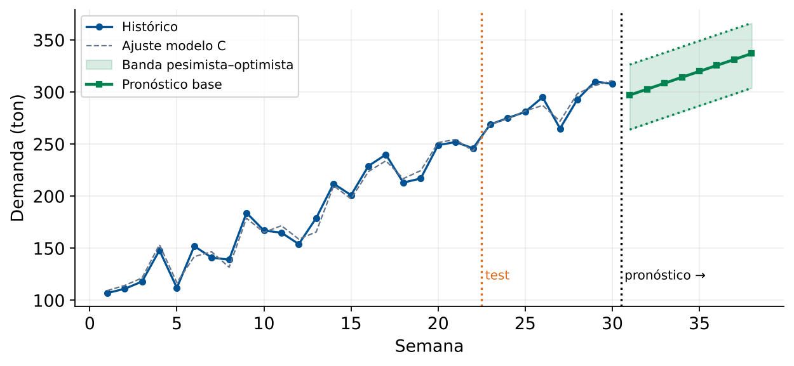

Inventario, Abastecimiento y Estrategia
Módulo 5 — Regresión y Análisis de Datos
Matemáticas 2 — Clase 27
Clase 27 — Integradora
Esta es una clase integradora del Módulo 5. Los estudiantes aplican todo lo aprendido en clases 21–26.
Al finalizar, el estudiante será capaz de:
Datos completos de las 30 semanas (media 207.7 ton, desv. 64.2 ton, mín 107, máx 310):
| Sem | Dem. (ton) | Precio ($/kg) | Camp. | Sem | Dem. (ton) | Precio ($/kg) | Camp. | Sem | Dem. (ton) | Precio ($/kg) | Camp. |
|---|---|---|---|---|---|---|---|---|---|---|---|
| 1 | 107 | 4.24 | 1 | 11 | 165 | 4.10 | 1 | 21 | 252 | 3.99 | 2 |
| 2 | 111 | 4.26 | 1 | 12 | 154 | 4.02 | 0 | 22 | 246 | 3.86 | 1 |
| 3 | 118 | 4.22 | 1 | 13 | 179 | 3.99 | 0 | 23 | 269 | 3.90 | 2 |
| 4 | 148 | 4.10 | 2 | 14 | 212 | 4.11 | 2 | 24 | 275 | 3.92 | 2 |
| 5 | 112 | 4.07 | 0 | 15 | 201 | 4.02 | 1 | 25 | 281 | 3.87 | 2 |
| 6 | 152 | 4.13 | 1 | 16 | 229 | 4.05 | 2 | 26 | 295 | 3.88 | 2 |
| 7 | 141 | 4.16 | 1 | 17 | 240 | 3.93 | 2 | 27 | 265 | 3.86 | 1 |
| 8 | 139 | 4.13 | 0 | 18 | 213 | 3.96 | 1 | 28 | 293 | 3.88 | 2 |
| 9 | 184 | 4.18 | 2 | 19 | 217 | 3.91 | 1 | 29 | 310 | 3.83 | 2 |
| 10 | 167 | 4.12 | 1 | 20 | 249 | 3.92 | 2 | 30 | 308 | 3.85 | 2 |
Salida esperada: media 207.73 ton · min/max 107/310 · desv. 64.18 · correlaciones: semana 0.9768, precio −0.8956, campañas 0.6676.
% Cargar datos del caso % Datos de las 30 semanas (tabla de la diapositiva anterior) t = (1:30)'; demanda = [107 111 118 148 112 152 141 139 184 167 165 154 179 212 201 229 240 213 217 249 252 246 269 275 281 295 265 293 310 308]'; precio = [4.24 4.26 4.22 4.10 4.07 4.13 4.16 4.13 4.18 4.12 4.10 4.02 3.99 4.11 4.02 4.05 3.93 3.96 3.91 3.92 3.99 3.86 3.90 3.92 3.87 3.88 3.86 3.88 3.83 3.85]'; campanas = [1 1 1 2 0 1 1 0 2 1 1 0 0 2 1 2 2 1 1 2 2 1 2 2 2 2 1 2 2 2]'; % Estadisticas basicas fprintf('=== ANALISIS EXPLORATORIO ===\n') fprintf('Semanas de datos: %d\n', length(t)) fprintf('Demanda media: %.2f ton\n', mean(demanda)) fprintf('Demanda min/max: %.1f / %.1f ton\n', min(demanda), max(demanda)) fprintf('Desv. estandar: %.2f ton\n', std(demanda)) % Correlaciones C = corrcoef([demanda, t, precio, campanas]); fprintf('\nCorrelaciones con demanda:\n') fprintf(' vs semana: %.4f\n', C(1,2)) fprintf(' vs precio: %.4f\n', C(1,3)) fprintf(' vs campanas: %.4f\n', C(1,4)) % Grafico exploratorio figure('Position',[50 50 950 450]); subplot(1,3,1); scatter(t, demanda, 60,'filled') xlabel('Semana'); ylabel('Demanda (ton)'); title('Demanda vs Tiempo'); grid on subplot(1,3,2); scatter(precio, demanda, 60,'filled','MarkerFaceColor','r') xlabel('Precio ($/kg)'); ylabel('Demanda (ton)'); title('Demanda vs Precio'); grid on subplot(1,3,3); boxplot(demanda, campanas) xlabel('Campanas activas'); ylabel('Demanda (ton)'); title('Demanda por campanas'); grid on
Resultados en la diapositiva siguiente.
% Division train/test: semanas 1-22 (train) / 23-30 (test) n_tr = 22; idx_tr = 1:n_tr; idx_te = (n_tr+1):30; y_tr = demanda(idx_tr); y_te = demanda(idx_te); t_tr = t(idx_tr); t_te = t(idx_te); rmse_f = @(yr,yp) sqrt(mean((yr-yp).^2)); mape_f = @(yr,yp) mean(abs((yr-yp)./yr))*100; % Modelo A: Tendencia lineal en t pA = polyfit(t_tr, y_tr, 1); yA_te = polyval(pA, t_te); % Modelo B: Tendencia cuadratico en t pB = polyfit(t_tr, y_tr, 2); yB_te = polyval(pB, t_te); % Modelo C: Regresion multiple (t + precio + campanas) Xc_tr = [ones(n_tr,1), t_tr, precio(idx_tr), campanas(idx_tr)]; Xc_te = [ones(8,1), t_te, precio(idx_te), campanas(idx_te)]; bC = Xc_tr \ y_tr; yC_te = Xc_te * bC; % Modelo D: Solo precio y campanas (sin tendencia temporal) Xd_tr = [ones(n_tr,1), precio(idx_tr), campanas(idx_tr)]; Xd_te = [ones(8,1), precio(idx_te), campanas(idx_te)]; bD = Xd_tr \ y_tr; yD_te = Xd_te * bD; % Tabla comparativa modelos = {'A: Lineal(t)','B: Cuadrat(t)','C: Multiple','D: Sin tiempo'}; YP_te = {yA_te, yB_te, yC_te, yD_te}; fprintf('%-18s %-12s %-12s\n', 'Modelo', 'RMSE_test', 'MAPE_test') for m = 1:4 fprintf('%-18s %-12.4f %-12.2f%%\n', modelos{m},... rmse_f(y_te,YP_te{m}), mape_f(y_te,YP_te{m})) end
| Modelo | RMSE\(_\text{test}\) | MAPE\(_\text{test}\) | Veredicto | |
|---|---|---|---|---|
| A | Lineal en \(t\) | 11.1 ton | 3.2% | Aceptable |
| B | Cuadrático en \(t\) | 12.4 ton | 3.2% | Aceptable |
| C | Múltiple (\(t\)+precio+camp) | 5.4 ton | 1.5% | Excelente |
| D | Solo precio+campañas | 21.1 ton | 6.8% | Débil |
Salida esperada: b0=244.23, b_t=5.70, b_precio=-38.27, b_camp=21.63. Base: 297.1 → 337.0 ton (total 2.536 ton); optimista: 326.4 → 366.3 (total 2.770); pesimista: 264.0 → 303.9 (total 2.271).
% Reajustar modelo C con TODOS los datos (train + test) X_full = [ones(30,1), t, precio, campanas]; bC_full = X_full \ demanda; fprintf('Modelo C reajustado (todos los datos):\n') fprintf(' b0=%.4f, b_t=%.4f, b_precio=%.4f, b_camp=%.4f\n',... bC_full(1), bC_full(2), bC_full(3), bC_full(4)) % Escenarios para semanas 31-38 t_fut = (31:38)'; precio_base = 3.80; % precio esperado precio_bajo = 3.60; % precio bajo (promo) camp_base = 1; % 1 campana camp_alto = 2; % 2 campanas (temporada alta) % Escenario base X_base = [ones(8,1), t_fut, repmat(precio_base,8,1), repmat(camp_base,8,1)]; y_base = X_base * bC_full; % Escenario optimista (precio bajo + 2 campanas) X_opt = [ones(8,1), t_fut, repmat(precio_bajo,8,1), repmat(camp_alto,8,1)]; y_opt = X_opt * bC_full; % Escenario pesimista (precio alto + 0 campanas) X_pes = [ones(8,1), t_fut, repmat(4.10,8,1), zeros(8,1)]; y_pes = X_pes * bC_full; fprintf('\nPronostico semanas 31-38 (ton):\n') fprintf('%-6s %-14s %-14s %-14s\n','Sem','Base','Optimista','Pesimista') for i=1:8 fprintf('%-6d %-14.2f %-14.2f %-14.2f\n', 30+i, y_base(i), y_opt(i), y_pes(i)) end

Histórico (azul), pronóstico base (verde) y banda optimista/pesimista para las semanas 31–38
Salida esperada: IS = 1.645 × 5.42 × 1.4142 = 12.61 ton · demanda media base 317.0 ton/sem · punto de reorden 646.7 ton (> 500: pedir semanalmente) · inventario máximo 378.9 ton · costo IS $44.13/sem ($2.294.84/año).
% Parametros operativos RMSE_modelo = 5.42; % ton (del modelo C en test) z95 = 1.645; % nivel de servicio 95% lead_time = 2; % semanas de reposicion costo_alm = 3.5; % $/ton/semana costo_rupt = 800; % $/ton cap_max = 500; % ton (capacidad CD) % Inventario de seguridad IS = z95 * RMSE_modelo * sqrt(lead_time); fprintf('Inventario de seguridad:\n') fprintf(' IS = z95 * RMSE * sqrt(LT) = %.2f * %.2f * %.4f = %.2f ton\n',... z95, RMSE_modelo, sqrt(lead_time), IS) % Punto de reorden (cuando pedir) demanda_promedio = mean(y_base); punto_reorden = demanda_promedio * lead_time + IS; fprintf('\nDemanda promedio semanal (base): %.2f ton\n', demanda_promedio) fprintf('Punto de reorden: %.2f ton\n', punto_reorden) fprintf(' (pedir cuando el inventario baje a %.0f ton)\n', punto_reorden) % Chequeo de capacidad: el punto de reorden supera la capacidad del CD if punto_reorden > cap_max fprintf('Reorden (%.0f) > capacidad (%d): pedir SEMANALMENTE\n', punto_reorden, cap_max) end % Politica semanal: pedido = demanda pronosticada de la semana de llegada (t+2) inv_max = max(y_opt) + IS; % inventario maximo (escenario optimista) fprintf('Inventario maximo esperado: %.1f ton (cap. %d)\n', inv_max, cap_max) % Costo semanal del IS costo_IS_sem = IS * costo_alm; fprintf('\nCosto semanal del IS: $%.2f\n', costo_IS_sem) fprintf('Costo anual del IS: $%.2f\n', costo_IS_sem*52)
Política de revisión semanal: cada semana se pide la demanda pronosticada de la semana en que llegará el pedido (lead time = 2 semanas). Así el inventario inicial de cada semana es su demanda + IS:
| Sem | Dem. pred. base (ton) | Inventario inicio sem = llegada + IS (ton) | Inventario fin sem ≈ IS (ton) | Pedido a colocar (ton) |
|---|---|---|---|---|
| 31 | 297 | 310 | 13 | 308 (llega sem 33) |
| 32 | 303 | 315 | 13 | 314 (llega sem 34) |
| 33 | 308 | 321 | 13 | 320 (llega sem 35) |
| 34 | 314 | 327 | 13 | 326 (llega sem 36) |
| 35 | 320 | 332 | 13 | 331 (llega sem 37) |
| 36 | 326 | 338 | 13 | 337 (llega sem 38) |
| 37 | 331 | 344 | 13 | 343 (llega sem 39) |
| 38 | 337 | 350 | 13 | 348 (llega sem 40) |
Tres escenarios para las semanas 31-38:
| Escenario | Dem.total (8 sem, ton) | IS (ton) | Costo IS ($/sem) | Riesgo ruptura |
|---|---|---|---|---|
| Pesimista | 2.271 | 12.6 ton | $44.1 | 5% |
| Base | 2.536 | 12.6 ton | $44.1 | 5% |
| Optimista | 2.770 | 12.6 ton | $44.1 | 5% |
El IS (12.6 ton) es el mismo en todos los escenarios: depende del RMSE del modelo, no del nivel de demanda.
Pero la cantidad a pedir varía:
| Criterio | Logrado (3) | En proceso (2) | Inicial (1) |
|---|---|---|---|
| Análisis exploratorio | Gráfico, correlaciones e interpretación completa | Gráfico sin interpretación | Solo estadísticas básicas |
| Selección del modelo | Validación train/test, tabla comparativa, justificación | Tabla sin justificación | Solo ajuste sin comparar |
| Pronóstico y escenarios | 3 escenarios con bandas e interpretación | Un escenario sin banda | Solo valores puntuales |
| Inventario de seguridad | Fórmula correcta, IS calculado, punto de reorden | IS correcto sin reorden | Sin cálculo de IS |
| Decisión ejecutiva | Recomendación con argumentos matemáticos y operativos | Recomendación parcial | Sin recomendación fundamentada |
.m) + párrafo de decisión (150 palabras).clase27_mini_caso4.m completamente ejecutable.clase27_mini_caso4.m, Rúbrica de evaluación.Regresión y Análisis de Datos — Completado
Próximo: Módulo 6 — Normas de Vectores